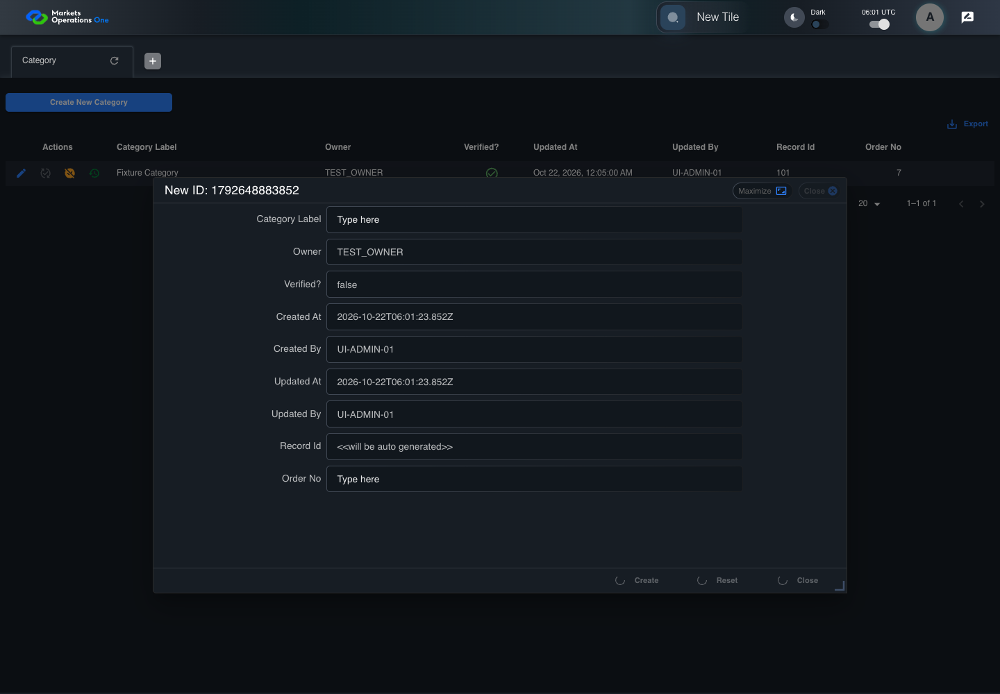

UI-ADM-GRD-007 actual administration UI with step evidence
PASS · application/run-050/ui-adm-grd-007-actual-administration-ui-with-step-evidence-8b89f3021322-attempt-1 · ACTUAL_APPLICATION_LOCAL_SERVICES
Actual current React administration screens. Controlled browser login supplies UI-ADMIN-01 and TEST_OWNER, or the declared SUPER_USER. Controlled BFF routes return the case-declared records. Other controlled saves persist submitted field values. This run establishes frontend handling only. It does not execute BFF validation, storage, audit generation, or authorization.
2026-10-22T06:01:21.597Z to 2026-10-22T06:01:25.857Z
Assertions and result · Artifact manifest · Exact run inputs and source hashes
Result SHA-256:9b669ff843e3ba71370834b8e39d3f6d5bba035d1123920d836cb5e8e69f5d77Machine observations
- ui-origin-admin-requests.json
74522bd3168a457012ee4de308c590aa3c4f82ce5acbaca692543ff1ef612ed0
Screenshot capture: CAPTURED. Named frames: 10.
Step screenshot bindings: COMPLETE. 9/9 canonical steps have execution screenshots.
Bindings measure structural coverage only. They do not establish screenshot content quality or relevance.
Screenshot content review: NOT_REVIEWED. Recorded context: 0/10 frames. Identical image bytes: 8 repeated frames. Recorded context does not establish human visual review.
Canonical step timeline
Given Admin A is authenticated as fixture UI-ADMIN-01 with the case-specific permissions
Execution: PASSED.
1. step-01 Visible state after step 1: Given Admin A is authenticated as fixture UI-ADMIN-01 with the case-specific permissions
2026-10-22T06:01:23.019Z · 1440×1000
Step: /Users/lushevol/code/github/ratan-release-impact/workbench/tasks/ui-test-coverage-20261022/test-cases.md:10040
SHA-256:e2fecea69f4b5e4c51bcbaa02ec757835da891f94c1c5ab30ccdcdea7ec7548fAnd Category Create is pending in a controlled response
Execution: PASSED.
2. step-02 Visible state after step 2: And Category Create is pending in a controlled response
2026-10-22T06:01:24.301Z · 1440×1000
Step: /Users/lushevol/code/github/ratan-release-impact/workbench/tasks/ui-test-coverage-20261022/test-cases.md:10041
SHA-256:046c78e9993ef1372e051629472c49aa10233bab729bd1429d68353e092917a0When the Category create request remains pending
Execution: PASSED.
3. step-03 Visible state after step 3: When the Category create request remains pending
2026-10-22T06:01:24.522Z · 1440×1000
Step: /Users/lushevol/code/github/ratan-release-impact/workbench/tasks/ui-test-coverage-20261022/test-cases.md:10042
SHA-256:046c78e9993ef1372e051629472c49aa10233bab729bd1429d68353e092917a0Image bytes match frame 2. An unchanged image can be valid for consecutive assertions. This match does not establish correct step content.
Then button named "Create" inside the new-record dialog inside the "Category" administration tabpanel is disabled
Execution: PASSED.
4. step-04 Visible state after step 4: Then button named "Create" inside the new-record dialog inside the "Category" administration tabpanel is disabled
2026-10-22T06:01:24.654Z · 1440×1000
Step: /Users/lushevol/code/github/ratan-release-impact/workbench/tasks/ui-test-coverage-20261022/test-cases.md:10043
SHA-256:046c78e9993ef1372e051629472c49aa10233bab729bd1429d68353e092917a0Image bytes match frame 3. An unchanged image can be valid for consecutive assertions. This match does not establish correct step content.
And a circular loading indicator is visible inside button named "Create" inside the new-record dialog inside the "Category" administration tabpanel
Execution: PASSED.
5. step-05 Visible state after step 5: And a circular loading indicator is visible inside button named "Create" inside the new-record dialog inside the "Category" administration tabpanel
2026-10-22T06:01:24.777Z · 1440×1000
Step: /Users/lushevol/code/github/ratan-release-impact/workbench/tasks/ui-test-coverage-20261022/test-cases.md:10044
SHA-256:046c78e9993ef1372e051629472c49aa10233bab729bd1429d68353e092917a0Image bytes match frame 4. An unchanged image can be valid for consecutive assertions. This match does not establish correct step content.
And button named "Reset" inside the new-record dialog inside the "Category" administration tabpanel is disabled
Execution: PASSED.
6. step-06 Visible state after step 6: And button named "Reset" inside the new-record dialog inside the "Category" administration tabpanel is disabled
2026-10-22T06:01:24.887Z · 1440×1000
Step: /Users/lushevol/code/github/ratan-release-impact/workbench/tasks/ui-test-coverage-20261022/test-cases.md:10045
SHA-256:046c78e9993ef1372e051629472c49aa10233bab729bd1429d68353e092917a0Image bytes match frame 5. An unchanged image can be valid for consecutive assertions. This match does not establish correct step content.
And a circular loading indicator is visible inside button named "Reset" inside the new-record dialog inside the "Category" administration tabpanel
Execution: PASSED.
7. step-07 Visible state after step 7: And a circular loading indicator is visible inside button named "Reset" inside the new-record dialog inside the "Category" administration tabpanel
2026-10-22T06:01:24.975Z · 1440×1000
Step: /Users/lushevol/code/github/ratan-release-impact/workbench/tasks/ui-test-coverage-20261022/test-cases.md:10046
SHA-256:046c78e9993ef1372e051629472c49aa10233bab729bd1429d68353e092917a0Image bytes match frame 6. An unchanged image can be valid for consecutive assertions. This match does not establish correct step content.
And button named "Close" inside the new-record dialog inside the "Category" administration tabpanel is disabled
Execution: PASSED.
8. step-08 Visible state after step 8: And button named "Close" inside the new-record dialog inside the "Category" administration tabpanel is disabled
2026-10-22T06:01:25.058Z · 1440×1000
Step: /Users/lushevol/code/github/ratan-release-impact/workbench/tasks/ui-test-coverage-20261022/test-cases.md:10047
SHA-256:046c78e9993ef1372e051629472c49aa10233bab729bd1429d68353e092917a0Image bytes match frame 7. An unchanged image can be valid for consecutive assertions. This match does not establish correct step content.
And a circular loading indicator is visible inside button named "Close" inside the new-record dialog inside the "Category" administration tabpanel
Execution: PASSED.
9. step-09 Visible state after step 9: And a circular loading indicator is visible inside button named "Close" inside the new-record dialog inside the "Category" administration tabpanel
2026-10-22T06:01:25.139Z · 1440×1000
Step: /Users/lushevol/code/github/ratan-release-impact/workbench/tasks/ui-test-coverage-20261022/test-cases.md:10048
SHA-256:046c78e9993ef1372e051629472c49aa10233bab729bd1429d68353e092917a0Image bytes match frame 8. An unchanged image can be valid for consecutive assertions. This match does not establish correct step content.
Additional named frames

The final visible state after the named test assertions.
2026-10-22T06:01:25.290Z · 1440×1000Step: Test source: /Users/lushevol/code/github/ratan-release-impact/workbench/e2e/audit-specs/admin-expanded.spec.ts:15
SHA-256:
046c78e9993ef1372e051629472c49aa10233bab729bd1429d68353e092917a0Image bytes match frame 9. An unchanged image can be valid for consecutive assertions. This match does not establish correct step content.
Screenshots establish visible state only. Assertions and traces support functional claims.